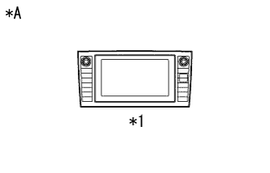

 |
w/ HDD Navigation System
- □ HINT □
- When replacing the navigation receiver assembly on a vehicle not subscribed to the G-BOOK service, perform the vehicle linking setting.
- To use the G-BOOK online service, a Bluetooth compatible cellular phone must be used.
| *A | w/ HDD Navigation System |
| *1 | Navigation Receiver Assembly |
 |
w/ HDD Navigation System, with Bluetooth Telephone Connected
A Bluetooth cellular phone is used for data communication and HELPNET/operator service voice calls.
- □ HINT □
- When replacing the navigation receiver assembly, perform the vehicle association setting, and then perform the G-BOOK use resumption operation and HELPNET service start operation.
- If the navigation receiver assembly is replaced while a purchased G-SOUND unlimited license exists, perform G-SOUND license recovery.
Text in Illustrations *A w/ HDD Navigation System *1 Navigation Receiver Assembly *a With Bluetooth Telephone Connected *b Bluetooth Connection